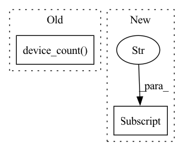

Pattern ID :36761
Before Change
train_loader = torch.utils.data.DataLoader(train_dataset, batch_size=batch_size, shuffle=True, num_workers=0)
val_loader = torch.utils.data.DataLoader(val_dataset, batch_size=batch_size, shuffle=False, num_workers=0)
net = net.to(device=device)
if torch.cuda.device_count() > 1:
print("Let"s use", torch.cuda.device_count(), "GPUs!")
// dim = 0 [30, xxx] -> [10, ...], [10, ...], [10, ...] on 3 GPUs
net = DataParallelPassthrough(net, device_ids=[0,1])After Change
starting_epoch = e
print(f"Starting from epoch {e}.")
break
if config["train_parallel"] :
net = DDPPassthrough(net, device_ids=[rank])
device = rank
In pattern: SUPERPATTERN
Frequency: 3
Non-data size: 2
Instances Fragment ID: 104836331
Project Name: aangelopoulos/im2im-uq
Commit Name: 724a17fdd06a8e74c062ff2ed05166135a35a96b
Time: 2021-06-24
Author: angelopoulos@n0024.abc0
File Name: core/scripts/train.py
M Class Name: AnonimousClass
N Class Name: AnonimousClass
M Method Name: train_net(13)
N Method Name: train_net(12)
M Parent Class:
N Parent Class:
M File Name: core/scripts/train.py
N File Name: core/scripts/train.py
M Start Line: 136
M End Line: 176
N Start Line: 147
N End Line: 194
Before Change
if len(cfg.device.gpu_ids) > 1:
print("rank = ", local_rank)
num_gpus = torch.cuda.device_count()
torch.cuda.set_device(local_rank % num_gpus)
dist.init_process_group(backend="nccl")
train_sampler = torch.utils.data.distributed.DistributedSampler(train_dataset)
train_dataloader = torch.utils.data.DataLoader(train_dataset, batch_size=cfg.device.batchsize_per_gpu,After Change
warnings.warn("Warning! Old .pth checkpoint is deprecated. "
"Convert the checkpoint with tools/convert_old_checkpoint.py ")
ckpt = convert_old_model(ckpt)
task.load_state_dict(ckpt["state_dict"] )
model_resume_path = os.path.join(cfg.save_dir, "model_last.ckpt") if "resume" in cfg.schedule else None
Fragment ID: 104836330
Project Name: rangilyu/nanodet
Commit Name: 6c7dd670c9bc0311a26bfe0ebb775726902db779
Time: 2021-04-11
Author: lyuchqi@gmail.com
File Name: tools/train.py
M Class Name: AnonimousClass
N Class Name: AnonimousClass
M Method Name: main(1)
N Method Name: main(1)
M Parent Class:
N Parent Class:
M File Name: tools/train.py
N File Name: tools/train.py
M Start Line: 43
M End Line: 87
N Start Line: 51
N End Line: 91
Before Change
os.environ["MASTER_PORT"] = str(port)
os.environ["WORLD_SIZE"] = ntasks
os.environ["RANK"] = str(proc_id)
torch.cuda.set_device(proc_id % torch.cuda.device_count() )
dist.init_process_group(backend=backend, **kwargs)
After Change
os.environ["LOCAL_RANK"] = os.environ["SLURM_LOCALID"]
if torch.cuda.is_available():
local_rank = int(os.environ["LOCAL_RANK"] )
assert local_rank < torch.cuda.device_count()
torch.cuda.set_device(local_rank)
Fragment ID: 104836329
Project Name: yeliudev/nncore
Commit Name: 62f23364224776da2767473b51e937f1f6701a5d
Time: 2021-07-13
Author: 22849092+yeliudev@users.noreply.github.com
File Name: nncore/engine/comm.py
M Class Name: AnonimousClass
N Class Name: AnonimousClass
M Method Name: _init_dist_slurm(1)
N Method Name: _init_dist_slurm(2)
M Parent Class:
N Parent Class:
M File Name: nncore/engine/comm.py
N File Name: nncore/engine/comm.py
M Start Line: 22
M End Line: 31
N Start Line: 23
N End Line: 38